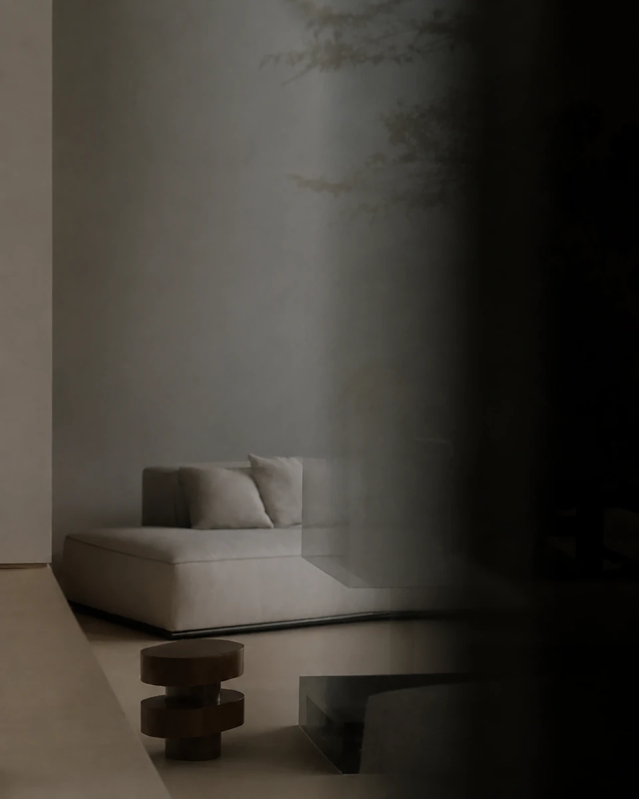
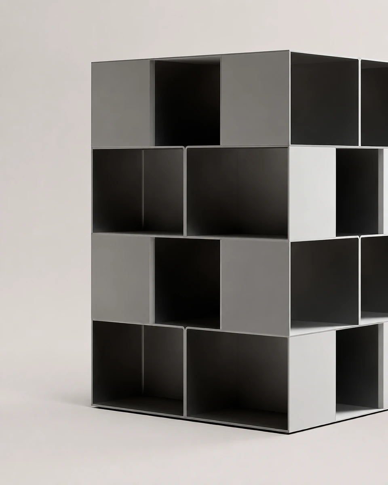
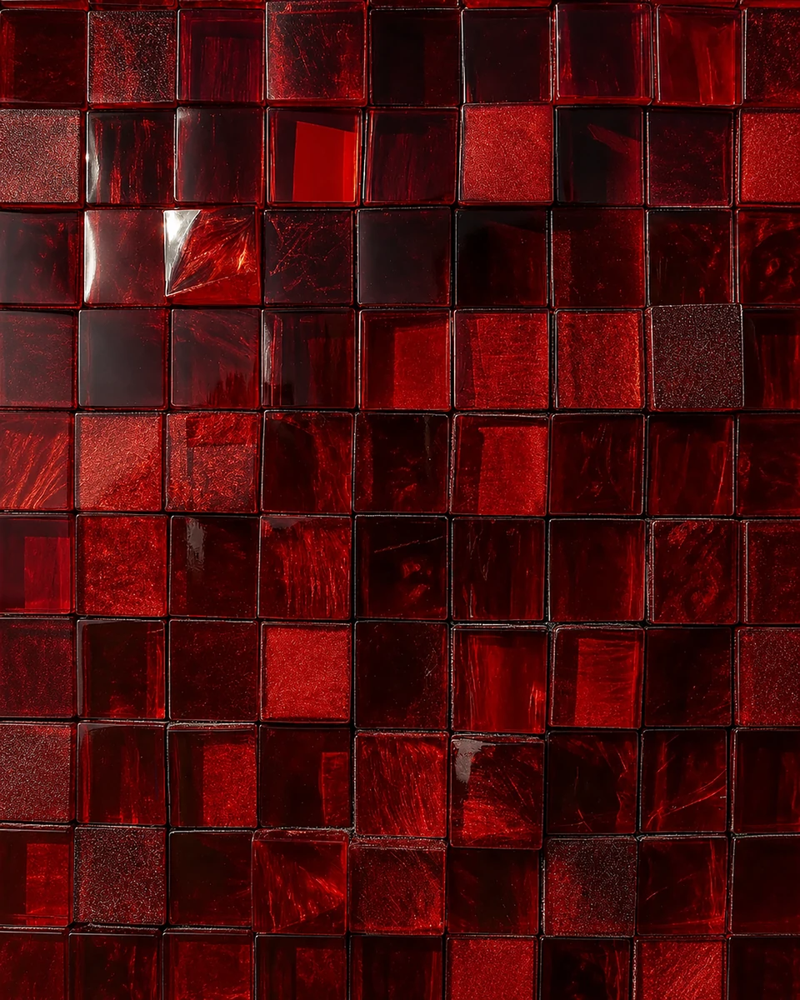
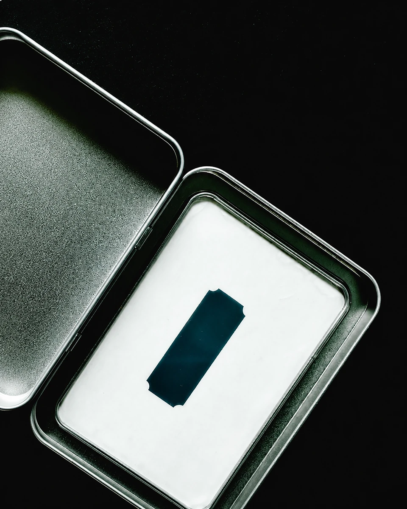
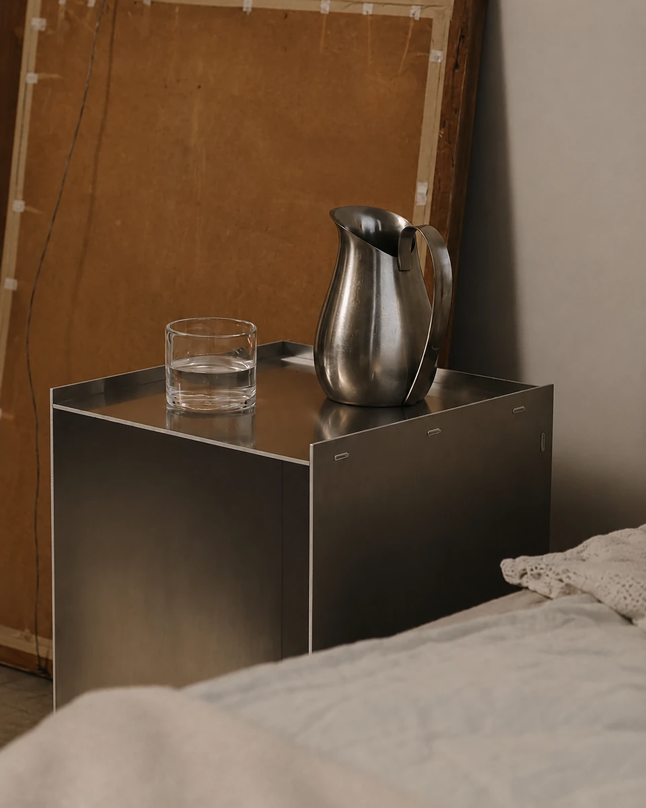
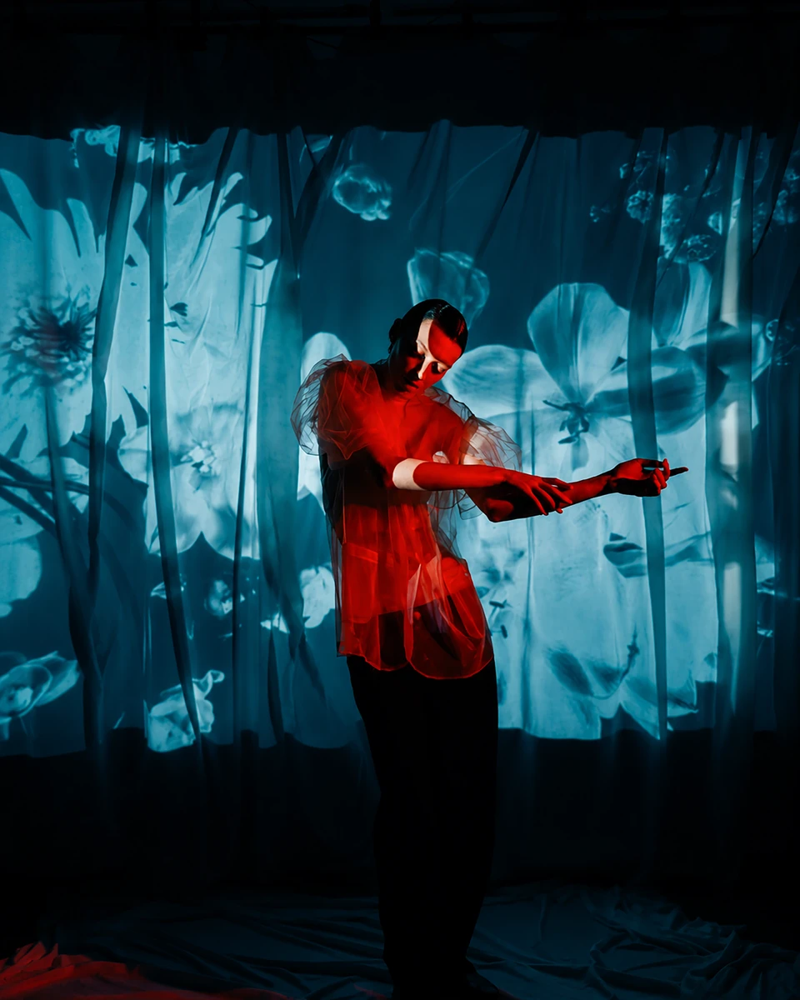
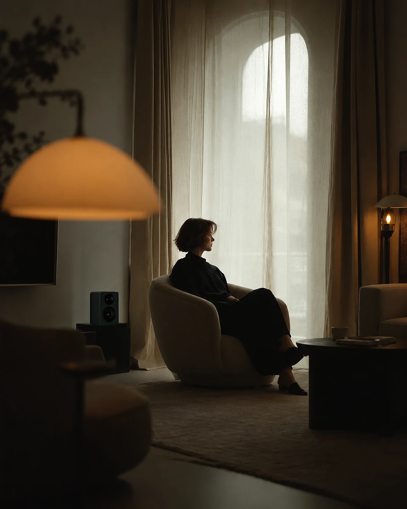
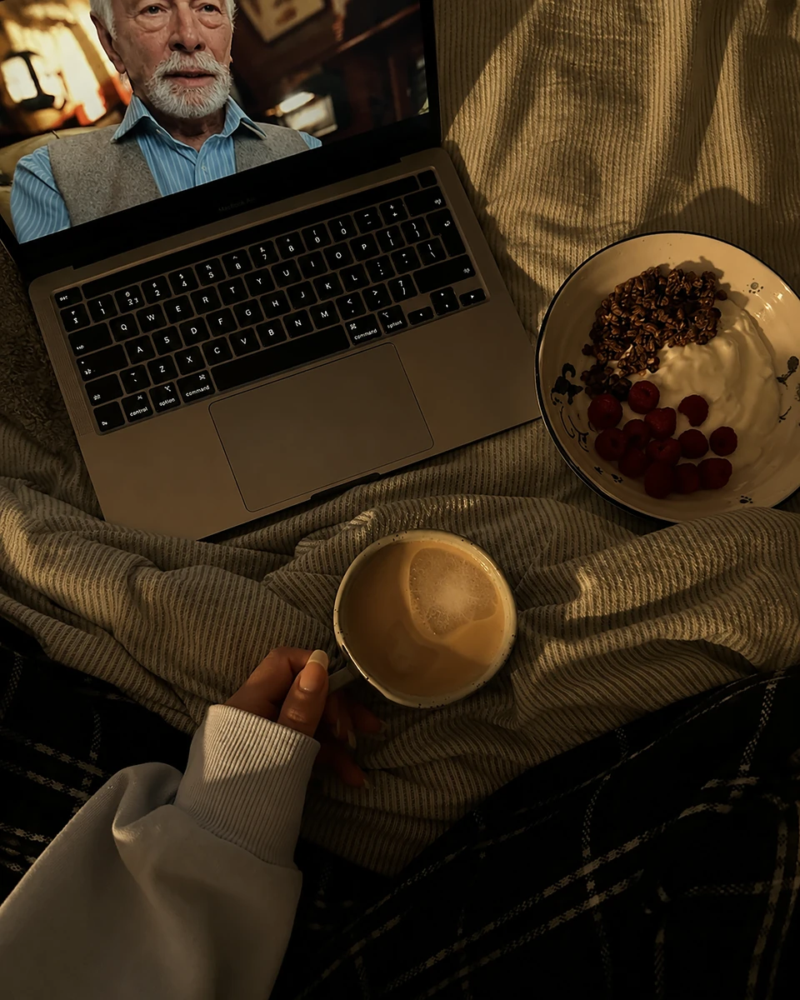
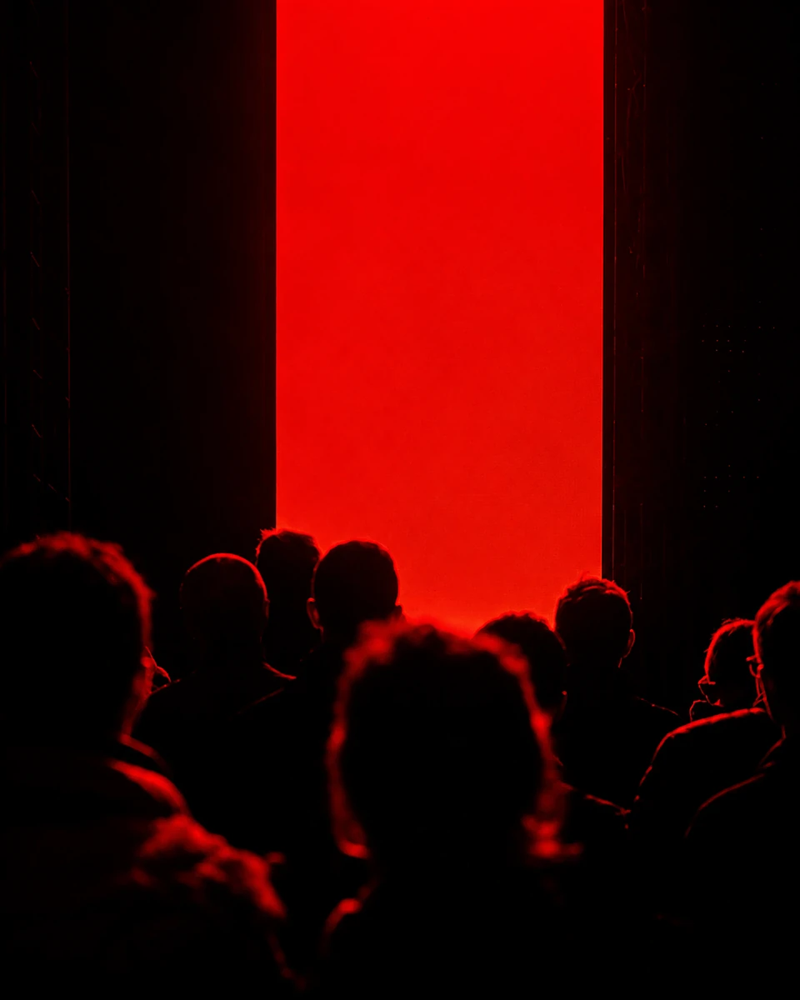
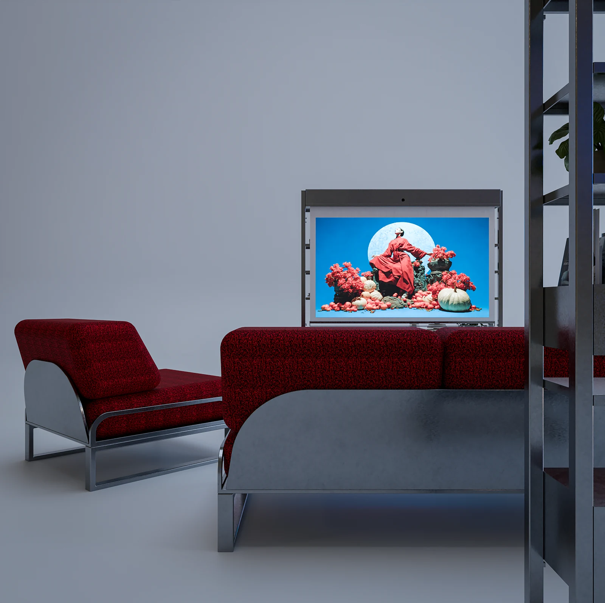

A flexible architectural system where furniture, projection and comfort support changing rituals of contemporary living.
Scroll to explore ↓
ClientIED Milano
Project typeFurniture Collection
Duration4 Months
ProjectCollaborative Academic Project — Team of 3
My roleResearch · Concept Development · CMF Development · 3D Modeling Support · High-End Rendering & Visualization
01 / Context
Entertainment spaces are becoming lighter, quieter and more adaptable.
Entertainment spaces are evolving beyond traditional living rooms centered around large televisions. As streaming and projection technologies become more accessible, users increasingly prefer projectors for their ability to disappear when not in use, freeing valuable space and reducing visual clutter. This shift enables more flexible, multifunctional interiors while creating a softer, more immersive atmosphere. The result is a warmer and more intimate environment that transforms everyday living into a cinematic experience.
Brief
A modular framework for living and entertainment.
Design a modular furniture system that rethinks the relationship between living spaces and home entertainment. The project investigates how storage, display, and projection technologies can be integrated into a flexible architectural framework that adapts to contemporary lifestyles. The objective is to create a solution that optimizes space, reduces visual clutter, and transforms the domestic environment into a more immersive setting for relaxation, social interaction, and digital experiences.
02 / Research
A home that evolves with its occupants.
Contemporary lifestyles demand environments that can evolve alongside changing activities, interests, and routines. Modular and multifunctional systems enable more efficient use of space by integrating storage, organization, and flexible configurations within a unified structure. Rather than increasing the amount of furniture, they maximize functionality, supporting personalized environments that remain adaptable, organized, and relevant over time.
Adaptable Living
Modularity enables users to configure the system according to their evolving needs, spaces, and lifestyles. Built around a simple structural framework, components can be added, removed, or repositioned to create personalized arrangements. From entertainment setups and storage solutions to display systems and wardrobe configurations, the flexibility of the architecture supports long-term adaptability. This approach encourages customization while maximizing functionality, allowing the system to grow and transform alongside its users.
Home Theater
Home theater systems are evolving from technology-focused setups into cozy, lifestyle-driven environments. As projectors become more compact and affordable, homeowners increasingly prefer immersive large-screen experiences without the visual dominance of traditional televisions. Their ability to disappear when not in use supports cleaner interiors, transforming living spaces into flexible entertainment destinations centered around comfort, atmosphere, and shared experiences.
The Streaming Revolution
The rapid growth of streaming platforms has fundamentally changed how people consume entertainment at home. With on-demand access to movies, series, gaming, and digital content, users increasingly seek environments that support immersive viewing experiences. This shift has accelerated demand for flexible home entertainment solutions, where projection technology, adaptable furniture, and atmosphere-driven interiors work together to create more engaging and personalized spaces.
Shared Experience
The growing preference toward a theater-like movie or gaming experience has led to the increase of home theater projectors.
Flexible home entertainment emerges where projection technology, adaptable furniture and atmosphere-driven interiors work together.
03 / User research & trend
Spaces for gathering, adaptation and emotional recovery.
01
Adaptable to Gathering & Entertainment
Contemporary living environments increasingly require flexible spaces that support multiple activities throughout the day. Rather than dedicating separate rooms to specific functions, users seek adaptable solutions that accommodate relaxation, entertainment, work, and social interaction. Creating a seamless balance between personal comfort and shared experiences has become essential, encouraging furniture systems that transform according to changing needs and lifestyles.
02
Adaptable Living Systems
Contemporary lifestyles demand environments that can evolve alongside changing activities, interests, and routines. Modular and multifunctional systems enable more efficient use of space by integrating storage, organization, and flexible configurations within a unified structure. Rather than increasing the amount of furniture, they maximize functionality, supporting personalized environments that remain adaptable, organized, and relevant over time.
03
Emotional Escape
Modern living is increasingly defined by constant digital stimulation, demanding schedules, and limited moments of rest. Beyond functionality, people seek environments that encourage emotional recovery and mental well-being. A dedicated space for entertainment, reflection, and relaxation allows users to temporarily detach from everyday pressures, creating a calming atmosphere where they can slow down, recharge, and reconnect with themselves and others.
04 / Collection
Mental Escape
05 / Moodboard
Comfort and restoration.
Mental Escape explores the emotional qualities that transform a house into a place of comfort and restoration. The moodboard combines intimate domestic rituals, cinematic projection, tactile materials, warm lighting, modular architecture, and contemplative spaces to express an environment that encourages pause and presence. Rich red tones symbolize warmth, emotion, and human connection, while calm neutral interiors introduce balance and clarity. Together, these references establish the visual language for a flexible furniture system that supports relaxation, shared experiences, and meaningful everyday living.









About Mental Escape

Mental Escape
Mental Escape reimagines the living environment as a sanctuary for relaxation, connection, and shared experiences. Responding to increasingly fast-paced lifestyles, the collection combines adaptable shelving, integrated projection, and modular seating into a cohesive system that transforms everyday interiors into immersive destinations. Inspired by the timeless ritual of gathering around a central source of warmth, the project uses light, architecture, and flexible design to foster comfort, emotional well-being, and meaningful moments within contemporary homes.
Furniture can shape atmosphere beyond function.
07 / Conceptualism & development
From sanctuary to system.
Mental Escape reinterprets the living room as a sanctuary for relaxation, connection, and shared experiences. Inspired by the timeless ritual of gathering around a central source of warmth, the project explores how furniture can shape atmosphere beyond function. Through a balance of modularity, openness, and visual lightness, the collection creates an environment that adapts to contemporary lifestyles while encouraging moments of pause, conversation, and immersion.
01
Conceptual exploration
Each design decision seeks to transform everyday interiors into calm, emotionally engaging spaces that support meaningful living.
02
3D Modelling with Rhino
Armet was developed in Rhino using a precise surface-modelling workflow focused on proportion, modularity, and structural clarity. The collection evolved through continuous refinement, balancing the relationship between the seating, shelving, and integrated projection system. Particular attention was given to frame geometry, construction feasibility, and visual consistency, resulting in a cohesive furniture family that combines architectural simplicity with production-oriented detailing.
03
Blender Rendering
Blender was used to evaluate materials, lighting, and spatial atmosphere throughout the design process. Iterative rendering explored the relationship between brushed stainless steel, textured upholstery, and soft ambient illumination to communicate the emotional character of the collection. Careful adjustments to material behaviour, reflections, and composition helped visualize Mental Escape as a calm, immersive living environment while producing high-quality editorial imagery suitable for presentation and portfolio development.
04
Post-Production as a Design Tool
Post-production was used to refine the visual atmosphere rather than simply enhance the final render. Through iterative adjustments to color temperature, contrast, material response, and ambient lighting, the imagery was carefully developed to communicate the calm, immersive character of Mental Escape. This workflow helped establish a cohesive visual language, balancing cool architectural tones with the warmth of the upholstered elements to create an editorial narrative that reinforces the project's emotional intent.
05
Prototyping
A physical scale prototype was developed to evaluate proportion, structural balance, and construction logic throughout the design process. Working with a tangible model provided insights that were difficult to assess digitally, particularly regarding the relationship between the frame, shelving modules, and integrated screen system. The iterative prototyping process supported continuous refinement, validating key design decisions while ensuring the collection maintained both architectural clarity and production-oriented feasibility.
08 / System
Modular configurations.
The collection is designed as a flexible architectural system rather than a fixed composition. A shared structural language allows shelving units, media modules, and storage elements to exist in multiple scales while maintaining visual consistency. This modular approach enables the system to adapt to different interior environments and user requirements without compromising its cohesive identity.
Sofa set
The social center of the collection.
Designed as the social center of the Mental Escape collection, the seating system encourages relaxation, conversation, and shared experiences. The modular composition balances generous comfort with architectural simplicity, combining soft upholstered volumes with a lightweight stainless steel frame. Its adaptable configuration allows the collection to respond to different living environments while maintaining a consistent visual language. Through restrained proportions, tactile materials, and an inviting presence, the sofa transforms everyday interiors into calm spaces that foster connection, wellbeing, and meaningful moments together.
09 / User experience
Two rhythms of everyday life.
Scenario 01
Shared Cinema
Mental Escape transforms the living room into an immersive home theater where furniture, storage, and projection work together as a unified system. The open configuration encourages shared viewing while maintaining an uncluttered environment, creating an atmosphere that brings people together through film, conversation, and evening rituals.
Scenario 02
Quiet Evenings
When entertainment is no longer the focus, the collection seamlessly returns to everyday living. The projector retracts, shelving becomes the visual centerpiece, and the furniture supports reading, relaxation, or quiet personal activities. Rather than demanding attention, the system integrates naturally into the home, offering comfort and flexibility throughout the day.
10 / User journey
From furniture to evening ritual.
01
Deploying the Screen
The projection screen is seamlessly integrated within the shelving system, remaining concealed until needed. A simple downward motion transforms the shelving into an entertainment center, allowing the living space to effortlessly transition from everyday use to a cinematic environment.
02
Preparing the Experience
With the screen deployed, the lower storage compartment provides immediate access to the projector. Every interaction is designed to feel intuitive and deliberate, reducing visual clutter while keeping technology discreetly integrated within the furniture.
03
Activating Entertainment Mode
Once positioned, the projector transforms the integrated screen into a shared focal point. The system creates a calm and immersive atmosphere, allowing the surrounding furniture to become part of a unified entertainment experience without compromising the character of the living space.
04
A Moment to Unwind
With every element prepared, the environment shifts into a place of quiet retreat. Watching a film becomes more than a functional activity; it becomes a daily ritual of slowing down, encouraging comfort, presence, and meaningful moments within the home.
11 / Technical details
Clarity from proportion to assembly.
Shelving Dimension
The overall proportions were carefully developed to integrate storage, display, and entertainment within a single architectural volume. The height accommodates a full projection screen while remaining comfortable for everyday interaction, and the balanced depth provides structural stability without dominating the living space. Every dimension supports intuitive use, efficient organization, and seamless integration into contemporary interiors.
Construction Logic
The collection is built upon a straightforward construction system that emphasizes clarity, precision, and manufacturability. Each component is designed as an independent element, simplifying production and assembly while reinforcing the architectural character of the shelving. The resulting structure reflects a balance between functional efficiency and refined material expression.
Sofa technical
The sofa's proportions balance visual lightness with everyday comfort. A low-profile silhouette creates an open and architectural appearance, while the deep seat and supportive backrest encourage extended relaxation. Carefully considered dimensions ensure ergonomic seating without overwhelming the surrounding space, allowing the furniture to complement the shelving system as part of a unified entertainment environment.
12 / Material resolution
CMF & Details
Eight details reveal how projection, storage, structure and material are integrated into one architectural language.
01
Integrated Projection System
The projection screen is seamlessly integrated within the shelving architecture, remaining concealed when not in use. This hidden solution preserves the clean architectural composition while allowing the furniture to effortlessly transition from everyday storage into an immersive entertainment environment.
02
Modular Shelving
Designed as a flexible storage system, the shelving accommodates a wide variety of objects without compromising the collection's clean architectural language. The repeated horizontal elements reinforce visual order while allowing everyday personalization.
03
Material Dialogue
Warm woven upholstery contrasts with the cool precision of brushed stainless steel, creating a balanced material composition. The combination introduces tactile comfort while expressing the collection's refined and contemporary character.
04
Structural Rhythm
The repeated horizontal members establish a clear structural rhythm, reinforcing balance, proportion, and openness. This consistent language allows shelving, projection, and storage elements to exist within one cohesive architectural system.
05
Soft-Close Drawer
Integrated drawers provide concealed storage for everyday accessories while preserving the collection's clean architectural appearance. Smooth soft-close runners ensure quiet operation, reinforcing the calm and refined experience of the system.
06
Rectilinear Geometry
A restrained rectangular geometry defines the collection's visual identity. Clear proportions and continuous linear elements create a calm architectural presence, reinforcing balance, simplicity, and timelessness throughout the system.
07
Integrated Projector Housing
A dedicated compartment securely houses the projector within the shelving structure, keeping the device concealed when not in use while ensuring precise alignment during projection. This integrated solution preserves the collection's clean architectural language without compromising functionality.
08
Brushed Stainless Steel
The collection is constructed from brushed stainless steel, selected for its durability, refined texture, and timeless character. Its subtle surface finish softly reflects light while reinforcing the architectural precision and production-oriented identity of the system.
13 / Design direction
Domestic Comfort
Designed as the emotional center of the collection, the sofa balances architectural clarity with everyday comfort. Deep upholstered cushions and an exposed stainless steel structure create a quiet contrast between softness and precision, supporting a variety of daily activities while maintaining a restrained visual presence within contemporary interiors.
14 / Design language
Structural rhythm through De Stijl.
Rather than directly imitating Piet Mondrian's compositions, the collection draws inspiration from the underlying principles of De Stijl for clarity, proportion, and the harmonious relationship between horizontal and vertical elements. Repeating linear frames and balanced asymmetry establish a restrained architectural rhythm, allowing storage, seating, and media components to share a cohesive visual language while maintaining openness, lightness, and structural clarity.
15 / Transformation
From Object to Experience
Mental Escape is designed to evolve throughout the day. In its quiet architectural state, the collection expresses clarity, proportion, and material balance. As projection, light, and everyday activity are introduced, these same objects transform into an immersive living environment—demonstrating how furniture can move beyond function to shape atmosphere, interaction, and emotional experience.
16 / Closing reflection
Beyond Furniture
Mental Escape explores how furniture can shape the emotional quality of everyday living. Rather than existing as isolated objects, the collection creates an adaptable environment where architecture, technology, and comfort work together to support moments of relaxation, conversation, and quiet reflection. It is an exploration of how thoughtful design can transform ordinary routines into meaningful domestic rituals.